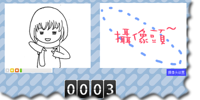

- I am a fan of Japanese Anime. That is where I learned Japanese.
- I have participated NOIP 2007 when I was in high school. It is a national
competition on programming. I prepared for that using the online judge, USACO, which assigned me with the ID
menie482, that I have been using since then. I posted my solutions here, in Chinese.
- When I was at the age addicted to programming instead of research, I made a
web application on renren.com. Users can make up a certain pattern (e.g. a heart
shape) by their poses. My friend and high school classmate, Chirr, helped me
with the illustrations (the lovely girl showing the pose below). My friend Azuis
helped me on the server-side.

Unfortunately we are unable to maintain it anymore. It is now offline.
- I love hiking. I have posted some panoramas on Google Map. For example, this
one in Mt. Rainier Naitonal Park and this
one at Mailbox Peak.
- My hometown is Jinan, Shandong, China. I have also lived in Nanjing in
China, and Austin TX, Seattle WA in the US.